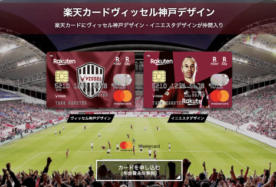

Works
Look at my some works.
MY WORKS
デザインシステム導入
ユーザーにとってわかりやすいデザインを目指して、楽天カードサイトを全面リニューアルしました。AtomicDesignを取り入れたデザインシステムを導入することで、デザインの一貫性が生まれました。
対象ページ例
フロントエンドエンジニアでありつつ、デザイナーにAtomicDesignのセミナーを開くなどしてデザインシステムの導入を行いました。
現在会員向けサイトのe-NAVIなどデザインシステム導入領域拡大のためにCSSフレームワークのバージョンアップなどを行っています。
現在会員向けサイトのe-NAVIなどデザインシステム導入領域拡大のためにCSSフレームワークのバージョンアップなどを行っています。
楽天カード一覧
楽天カード入会時や楽天カードを比較する際に使用される重要な楽天カードの一覧ページのデザイン・実装を担当しました。ユーザーテストを重ねユーザーにとって使いやすいページを目指しました。
また、一部の機能をjQueryプラグインにすることで汎用性の高い実装を実現しました。
対象ページ

トレンドの技術などは使っていないですが、セマンティックなマークアップとページスピードの高速化を行い、SEOの向上に貢献しています。
対象ページ例
対象ページ例
PORTFOLIO